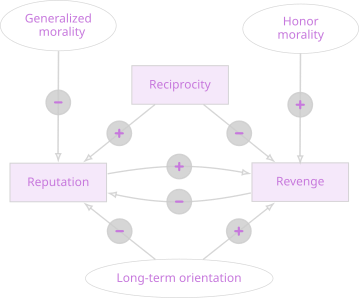

The cultural foundations of cooperation enforcement

Why do people in some societies take revenge when they are cheated, while in others they respond by gossiping or simply by cutting ties with the offender? Via a game-theoretical model, the paper argues that a plausible explanation for these differences are cultural beliefs. Extensive empirical tests, drawing on ethnographic data from pre-industrial societies and from four modern cross-national survey programs, suggest that the proposed framework captures general mechanisms underlying cross-cultural variation in enforcement strategies.
Link to the paper: Open Access
Link to replication materials: OSF